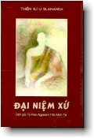

| Ghi chú về qui ước viết các
ký tự Pali trên Internet:
|
|  | Ðại Niệm XứThiền sư U Silananda
|
Lời Giới Thiệu của Ban Tu Thư Như Lai Thiền ViệnNhững bài kinh Phật không có bài nào là không hay. Có miệt mài trên những trang kinh xưa mới cảm được sự vang động của suối nguồn trí tuệ. Lời kinh là những tiếng sấm rền vang chấn động tâm thức chúng sanh đang chới với giữa những làn sóng ưu phiền trong biển sanh tử. Kinh nghiệm giác ngộ của bậc toàn giác được trao truyền ròng rã trong suốt 45 năm để lại một kho tàng tư tưởng giải thoát, một sự trưởng thành tột cùng của trí thông minh và cảm thức con người. Mỗi lần đọc kinh là mỗi lần cảm nhận được sức mạnh của phước báu đã cho tâm thức bay lượn một khoảng không gian khá rộng trong bầu trời siêu thoát mênh mông. Tuy nhiên đối với thiền sinh hay ít ra những ai đang hướng về chân trời rực rỡ ánh hồng giải thoát, có thể nói Kinh Ðại Niệm Xứ là bài kinh thỏa thích nhất hay đúng hơn là bài kinh tối cần, gần gũi nhất. Tối cần như cốt tủy và gần gũi như máu chảy khắp châu thân. Những lời kinh như những lời thiên thu gọi hãy dũng mãnh lên đường hướng về bến bờ giải thoát cho chính mình. Trong phần mở đầu, Ðức Phật dạy:
Lời dạy thật minh bạch, rõ ràng như bầu trời xanh trong muà hạ trắng không một áng mây. Ðây là con đường và là con đường độc nhất. Con đường an lạc ẩn dấu tự nghìn xưa này đã được Ðức Phật phơi bày ra cho tất cả chúng sanh và tồn tại qua bao tháng trầm của lịch sử nhân loại. Phải có phước báu lớn mới sinh vào thời kỳ Ðức Phật còn hiện tiền để được tu tập dưới sự hướng dẫn của Ngài hay để được Ngài diễn giải những lời kinh, nhiều khi tưởng dễ lãnh hội nhưng đi sâu vào là cả một vấn đề. Bao nhiêu thế hệ đã qua đi, và ngày nay chúng ta còn may mắn sống trong ánh đạo vàng rạng ngời của Ðức Thế Tôn. Ðể hiểu những lời kinh cho chính xác hầu tu tập, chúng ta phải nương tựa vào các bậc chân tu thông hiểu giáo pháp và đầy kinh nghiệm thực chứng để thấy rõ con đường thanh bạch cao thượng. Những vị này thật quá hiếm hoi trong thời đại văn minh cơ khí ngày nay, một thời đại mà khoa học đã đạt đến đỉnh cao nhưng sự đau khổ trầm kha vẫn triền miên không hề thuyên giảm. Như Lai Thiền Viện có duyên lành theo học với Ngài Hòa thượng Thiền Sư U Silananda từ năm 1987. Ngài thọ giới Tỳ kheo hơn năm mươi năm, hoàn mãn văn bằng Phật học cao cấp nhất tại Miến Ðiện và đã từng dạy tại đại học ở đó. Trong kỳ Kiết Tập Kinh Ðìển Phật Giáo lần thứ sáu tại Miến Ðìện vào năm 1954, Ngài là vị lãnh đạo việc soạn thảo tự điển Miến-Pali và cũng là trưởng ban kiết tập Kinh Ðiển Pali, Chú Giải, và Phụ Chú Giải lúc Ngài mới vừa 26 tuổi. Ngài là tác giả cuả nhiều sách viết bằng tiếng Miến và tiếng Anh, trong đó có cuốn "The Four Foundations of Mindfulness" (Tứ Niệm Xứ), một cuốn sách căn bản giảng dạy đầy đủ về Thiền Tứ Niệm Xứ. Năm 1979, Ngài được sư phụ là cố Ðại lão Hòa Thượng Thiền Sư Mahasi Sayadaw, một thiền sư lỗi lạc bậc nhất tại Miến Ðiện, lựa chọn đi hoằng pháp tại các nước ngoài, đặc biệt là Mỹ Quốc. Với sứ mạng này, Ngài đã hướng dẫn Thiền Tứ Niệm Xứ hay Thiền Quán và giảng dạy Vi Diệu Pháp, môn Phân Tâm Học cao siêu của Phật Giáo, tại Hoa Kỳ, Nhật Bản, Âu Châu và Tích Lan. Với kinh nghiệm thực chứng thâm sâu và kiến thức bao la về Phật Pháp, Ngài giảng giải giáo lý, hướng dẫn thiền tập một cách súc tích và rành mạch trong tinh thần từ bi và độ lượng của một bậc thầy đáng kính. Thiền viện được tăng trưởng dưới bóng mát từ bi và trí tuệ của Ngài. Một trong những bài kinh được Ngài Thiến Sư giảng khá đầy đủ chi tiết là bài Kinh Ðại Niệm Xứ. Những lời dạy của Ðức Phật trong bài kinh này đã được Ngài dựa trên Chú Giải, Phụ Chú Giải và kinh nghiệm thực chứng giải thích một cách rõ ràng để thiền sinh thực hành. Ðây là công trình giảng dạy và hướng dẫn tận tụy. Nhận thấy tầm mức quan trọng của Kinh Ðại Niệm Xứ và sự giảng giải công phu của Ngài Thiền Sư, một đệ tử của Ngài đã cố gắng hiệu đính và cho in thành sách "The Four Foundations of Mindfulness". Như Lai Thiền Viện tiếp nối truyền thống cao đẹp này bằng cách thỉnh cầu Ðại Ðức Khánh Hỷ (Aggasami Trần Minh Tài) phiên dịch sang tiếng Việt để phổ biến cho Phật Tử Việt Nam. Dù đa đoan với nhiều Phật sự, nhưng Ðại Ðức một lần nữa đã hoan hỉ nhận lời yêu cầu của Như Lai Thiền Viện và đã hoàn tất công trình soạn dịch một cách viên mãn. Nay bản dịch đã hoàn thành chu đáo, Như Lai Thiền Viện xin được đa tạ Hòa Thượng Thiền Sư U Silananda và Ðại Ðức Khánh Hỷ đã cho thiền viện được đặc ân ấn tống bản dịch sách giải thích Kinh Ðại Niệm Xứ. Như Lai Thiền Viện rất lấy làm vinh dự được giới thiệu sách dịch đến quí thiền sinh và Phật tử. Mong rằng quí vị sẽ tìm được nơi sách những ánh sáng soi tỏ con đường tu chứng. Hãy là những người lữ hành đơn độc tinh tấn bước đi trên con đường độc nhất để khỏi uổng phi kiếp người quý báu hi hữu có được trong dòng thời gian dài lê thê của kiếp luân hồi. Với tâm nguyện lấy trí tuệ làm sự nghiệp, Thiền Viện cầu mong quý vị đến được chân trời thênh thang đầy hoa thơm và cỏ lạ và ghi dấu tâm chứng trên dòng hiện sinh. Hiền nhân thỏa thích nghe lời
Phật, Ban Tu Thư Vài Lời Của Người Soạn DịchNhận thấy Kinh Ðại Niệm Xứ là một kinh rất quan trọng đối với những người hành thiền; nếu không hiểu rõ kinh này lại không được thiền sư hướng dẫn trực tiếp thì sẽ thực hành sai lầm và việc hành thiền sẽ không gặt hái kết qủa tốt đẹp. Từ khi chuyên tâm hành Thiền, chúng tôi có ý muốn dịch và soạn thảo một tài liệu thật đầy đủ về lý thuyết cũng như thực hành Tứ Niệm Xứ, tức Thiền Minh Sát, để giúp đỡ những Phật tử muốn thực hành đạo giải thoát. Trong khi chưa có tài liệu thuận duyên để soạn thảo thì may thay, vào năm 1983, chúng tôi được tham dự một khóa thiền tại Lafayette, California dưới sự hướng dẫn của Hòa Thượng Thiền Sư Silananda. Trong khoá thiền này, Thiền sư đã dành trọn mười buổi pháp thoại để giảng giải Kinh Ðại Niệm Xứ. Hòa Thượng Thiền Sư trong khi diễn giảng đã căn cứ vào Chú Giải, Phụ Chú Giải, và chú giải của Hòa Thượng Thiền Sư Mahasi (một vị Tam tạng pháp sư, hội chủ Ðại hội Kết tập Tam Tạng lần thứ sáu). Là một học giả thâm cứu Phật Pháp, một Thiền sư kinh nghiệm thực chứng, có tinh thần của một luật gia, một sử gia, nên Hòa Thượng Silananda đã giảng giải Kinh Ðại Niệm Xứ môt cách khúc chiết, rõ ràng, hợp theo nguyên tắc luận lý và khoa học, không chủ quan, thiếu căn cứ... Ðọc Kinh Ðại Niệm Xứ do Hòa Thượng Silãnanda giảng giải chúng ta sẽ hiểu rõ ràng những lời dạy thực hành của Ðức Phật. Các bạn sẽ tìm thấy ở đây những lời giảng giải chính xác, rõ ràng theo đúng kinh đìển nguyên thủy, nghĩa là vào thời kỳ mà Phật giáo chưa chia thành bộ phái, chưa bị người sau, vì lý do này hay lý do khác, thêm vào. Ðây là một bản Kinh nguyên thủy hay gần nguyên thủy nhất mà các nhà nghiên cứu Phật học khách quan đều thừa nhận. Trong cuốn sách này nhiều điểm được giải thích rõ để tránh thực hành sai lầm. Chẳng hạn như trong phần niệm hơi thở các điểm sau đây được sáng tỏ: 1) Chánh niệm Tỳ khưu thở vào, chánh niệm Tỳ khưu thở ra. Câu này giảng giải cách hành thiền. Khi hành thiền bạn giữ tâm trên hơi thở vào và hơi thở ra. Thực ra, bạn để tâm ở cửa mũi và quan sát hơi thở "vào ra", "vào ra"... Tâm phải đặt ở cửa mũi trong khi theo dõi hơi thở vào và ra. Nghĩa là không cố ý theo hơi thở và tưởng tượng hơi thở đang đi vào trong cơ thể hay nghĩ rằng hơi thở giai đoạn đầu ở mũi, giai đoạn hai ở tim và giai đoạn ba ở rốn như nhiều người đã dạy và thực hành. (Thanh Tịnh Ðạo có nói rõ là thiền sinh sẽ bị loạn tâm ở ba giai đoạn mũi, tim và rốn. Phải để tâm ở cửa mũi như người gác cửa quan sát kẻ ra người vào, hoặc như người thợ mộc khi cưa một khúc gỗ thì phải chú tâm vào nơi lưỡi cưa tiếp xúc với gỗ chứ không theo dõi lưỡi cưa chạy tới chạy lui). 2) Thở vào một hơi dài, Tỳ khưu biết: "tôi đang thở vào dài"; thở ra một hơi dài, Tỳ khưu biết: "tôi đang thở ra dài". Trong suốt thời gian quán sát hơi thở; đôi lúc thiền sinh bỗng nhiên thở một hơi dài, thiền sinh phải nhận biết "tôi đang thở một hơi dài". Ðìều này không có nghĩa là thiền sinh phải cố ý thở ra một hơi dài để biết rằng mình đang thở một hơi dài. Chữ "biết" ở đây, có nghĩa là biết một cách trọn vẹn chứ không phải chỉ biết hời hợt bề mặt. 3) "Nhận thức rõ toàn thể hơi thở vào (khởi đầu, kéo dài và chấm dứt), tôi sẽ thở vào", tỳ khưu tinh tấn như vậy (nghĩa là thầy Tỳ khưu tự huấn luyện như vậy). "Nhận thức rõ toàn thể hơi thở ra (khởi đầu, kéo dài và chấm dứt), tôi sẽ thở ra", tỳ khưu tinh tấn như vậy. (Nhiều bản dịch là: "cảm giác toàn thân tôi sẽ thở ra" và giải thích rằng hãy cảm giác toàn thân rồi mới thở ra) Khi quan sát hơi thở bạn phải cố gắng để thấy rõ ràng toàn thể hơi thở. Nhận thức rõ có nghĩa là biết được hơi thở, biết trọn vẹn, cố gắng ý thức được hơi thở một cách sắc bén. Nhóm chữ toàn thể hơi thở tiếng Paali là "Sabbakaaya" (sabba: là toàn thể, kaaya là cơ thể hay thân, hay một nhóm). Nhưng Kaaya (cơ thể) ở đây không có nghĩa là cơ thể hay thân của thiền sinh mà là thân hơi thở. Do đó, Sabbakaaya ở đây không có nghĩa là "toàn thể cơ thể vật chất" mà là "toàn thể hơi thở", và "toàn thể" ở đây có nghĩa là sự khởi đầu, kéo dài và chấm dứt. Bởi vậy, thiền sinh phải cố gắng ý thức trọn vẹn sự khởi đầu, kéo dài và chấm dứt của hơi thở. Bạn cũng phải nên nhớ rằng đây là mục nói về "quán sát hơi thở", bởi vậy đề mục hành thiền ở đây phải là hơi thở mà không phải là toàn thể cơ thể vật chất. Sách Thanh Tịnh Ðạo đã giải thích như sau:
4) An tịnh hơi thở vào (còn thô tháo) (nhân duyên bởi thân), tôi sẽ thở vào, tỳ khưu tinh tấn như vậy. An tịnh hơi thở ra (còn thô tháo) (nhân duyên bởi thân), tôi sẽ thở ra, tỳ khưu tinh tấn như vậy. Theo Chú giải, câu này có nghĩa: "Khi hơi thở vào trở nên an tịnh, vi tế khó thấy, khó ghi nhận; thầy tỳ khưu phải cố gắng chú tâm và tinh tấn nhiều hơn để thấy rõ. Khi hơi thở ra trở nên an tịnh, vi tế khó thấy, khó ghi nhận; thầy tỳ khưu phải cố gắng chú tâmvà tinh tấn nhiều hơn để thấy rõ." Nhiều người giải thích là thiền sinh phải làm cho tâm mình an tịnh hay chú tâm đến sự an tịnh của thân rồi thở ra. Ðây là mợt lối giải thích không đúng theo tinh thần kinh Ðại Niệm Xứ. Vì khi thực hành Tứ Niệm Xứ thì phải quán sát, theo dõi chứ không tạo ra hay đặt định một điều gì cả. Chữ "thân hành" (Kaaya-sa.nkhaara) ở đây có nghĩa là hơi thở nhân duyên bởi thân. Ở đây danh từ Kaaya-sa.nkhaara hàm nghĩa là hơi thở. Hơi thở ở đây được xem là hơi thở "thô tháo" bởi vì nó cần được "làm cho an tịnh". Câu "An tịnh hơi thở" không có nghĩa là thiền sinh phải cố ý làm cho hơi thở an lạc, an trú, tĩnh lặng mà có nghiã là khi hơi thở trở nên vi tế thiền sinh phải cố gắng chú tâm và tinh tấn nhiều hơn để thấy rõ. Ðối với các đề mục thiền khác, khi thiền sinh càng định tâm và hiểu rõ đề mục thì đề mục càng rõ ràng (Như đề mục thiền định, chú tâm vào cái đĩa bằng đất chẳng hạn, khi càng chú tâm thì đề mục càng rõ ràng). Ðối với đề mục hơi thở thì trái lại, càng tiến bộ thì đề mục càng vi tế hơn. Hơi thở tùy thuộc vào thân và tâm; do đó lúc không hành thiền, nếu thân và tâm không an tịnh thì hơi thở sẽ trở nên thô tháo. Khi bạn chuyên tâm hành thiền, thân tâm trở nên an tịnh, tĩnh lặng, lúc ấy hơi thở trở nên vi tế khó nhận thấy. Vào lúc nảy, phải nỗ lực chú tâm vào đề mục hành thiền hơn nữa để nhìn thấy hơi thở vi tế này. Khi bạn hành thiền với nỗ lực tinh tấn và đạt thêm nhiều hiểu biết thì bạn sẽ thấy rõ hơi thở dù chúng nhỏ nhặt đến đâu. Trong lúc hành thiền, khi hơi thở trở nên quá vi tế không thể nhận ra được thì bạn cũng đùng vội vã bỏ thiền. Bạn phải tự khích lệ và tinh tấn để quán sát hơi thở nhỏ nhặt vi tế ấy cho đến khi hơi thở rõ ràng trở lại. Ðó là ý nghĩa của câu: "An tịnh hơi thở" hay "Tinh tấn chú tâm vào hơi thở (khi hơi thở trở nên) vi tế khi thở vào". 5) "Quán sát thân trong nội thân, quán sát thân trong ngoại thân hay tỳ khưu quán sát thân trong nội thân và ngoại thân." Quán sát thân trong nội thân có nghĩa là thiền sinh quán sát hay ghi nhận hơi thở vào và hơi thở ra của mình. Khi thiền sinh đã đạt được một số tiến bộ trong việc chú tâm vào hơi thở của chính mình, bỗng nhiên thiền sinh nghĩ đến hơi thở của người khác và tự nhủ: "Hơi thở của ta có điểm khởi đầu và điểm chấm dứt, sinh và diệt, thì hơi thở cuả người khác cũng vậy". Ðó là thiền sinh đã "Quán sát thân trong ngoại thân". Câu "Quán sát thân trong ngoại thân" chỉ có nghĩa là trong khi quán sát hơi thở mình bỗng nhiên "nghĩ" đến hơi thở của người khác chứ không có nghĩa là "nhìn" vào người khác và quán sát hơi thở của họ. Tuy nhiên khi bỗng nhiên quán sát hơi thở của người khác thì bạn cũng phải chánh niệm nữa. Ðôi khi bạn quán sát hơi thở của chính mình rồi bỗng nhiên lại "nghĩ" đến hơi thở của người khác, xong lại trở về với hơi thở của mình, tiếp đó lại nghĩ đến hơi thở của người khác... Ði đi lại lại giữa hơi thở của mình và hơi thở cuả người khác đó là: Quán sát thân trong nội thân và thân trong ngoại thân. Câu này không có nghĩa là phải quán sát hơi thở của chính mình và hơi thở của người khác. Trong khi hành thiền bạn chỉ chú tâm quán sát hơi thở của chính bạn mà thôi. -oOo- Trên đây chúng tôi nói đến một số điểm căn bản về phần niệm hơi thở. Ðọc hết cuốn sách các bạn sẽ hiểu rõ kinh Ðại Niệm Xứ hơn để thực hành một cách tốt đẹp hơn. Bản soạn dịch Kinh Ðại Niệm Xứ này, phần lớn dựa vào cuốn "The Four Foundation of Mindfulness", ghi lại những bài giảng của Hoà Thượng Thiền Sư Silànanda về Kinh Ðại Niệm Xứ. Rất tiếc là cuốn sách trên không được nhuận sắc kỹ càng nên có nhiều thiếu sót và sai lầm. Rất may là trong khi soạn dịch cuốn này chúng tôi có dịp gần gũi với Hòa Thượng Tác giả, nên được Hòa Thượng giảng giải và chỉ dẫn thêm những phần lầm lẫn và thiếu sót. Bản soạn dịch này cũng được bổ túc thêm bằng những chi tiết rút ra từ những bài giảng về Kinh Ðại Niệm Xứ đã được Hòa Thượng giảng dạy tại Như Lai Thiền Viện, San Jose, California; tại chùa Từ Quang, San Francisco, California; và tại Bát Nhã Thiền Viện, Montréal, Canada. Tất cả những phần thêm vào, sửa chữa cũng như sự sắp xếp thứ tự các đoạn văn đều được chúng tôi trình bày và nhận ý kiến của Hòa Thượng. Ðể độc giả có dịp làm quen với tiếng Paa.li, ngôn ngữ chính trong các kinh điển Phật Giáo, nên trong phần Paa.li -Việt đối chiếu, những từ Paa.li được giải thích rộng hơn và bổ túc thêm một số từ thông dụng. Chúng tôi xin thành thật cám ơn quí vị đã bỏ công sức vào việc hoàn thành bản soạn dịch Kinh Ðại Niệm Xứ này; xin chia đều phước báu pháp thí cao quí này đến tất cả quí vị. Trước hết, chúng tôi xin thành thật tri ân Hòa Thượng Thiền Sư Silananda đã giảng giải cặn kẽ cho chúng tôi những phần thiếu sót và lầm lẫn trong bản tiếng Anh. Tiếp đến, Hòa Thượng Thiền Sư Kim Triệu đã hiệu đính, cho nhiều ý kiến về việc thực hành và chỉ cho chúng tôi biết những sai lầm mà các người dịch và dẫn giải kinh Ðại Niệm Xứ trước đây đã gặp phải. Ðại Ðức Ngộ Không đã chép tay phần lớn bản thảo. Ðạo Hữu Phạm Phú Luyện đã bỏ ra nhiều ngày cùng chúng tôi duyệt lại nhiều lần toàn bản soạn dịch. Cô Bội Khanh là người đã xem xét lại toàn bản soạn dịch nhất là những phần chính tả từ khi bản soạn dịch mới thành hình. Cô Tịnh Nguyên, Chị Du giúp chép tay và sửa lỗi chính tả một số chương. Ðạo hữu Từ Sơn đã giúp đỡ phần kỹ thuật Computer, trình bày sách và phụ dịch phần Paa.li-Việt đối chiếu. Sư cô Candobhasi Huệ Minh và Ðạo hữu Diệu Thu giúp đánh máy và giảng nghĩa một số từ Anh Ngữ. Ðạo hữu Trần Minh Lợi và Trương Ðiền đã giúp vé máy bay và phương tiện chuyên chở cùng các chi phí khác trong những lần chúng tôi về Như Lai Thiền Viện để hoàn thành cuốn Kinh Ðại Niệm Xứ này. Và rất nhiều vị đã đóng góp ý kiến, khuyến khích, giúp đỡ, hối thúc và ủng hộ tịnh tài để cuốn Kinh Ðại Niệm Xứ, sau chín năm dài cưu mang (kể từ khi hai đạo hữu Khoát-Thúy gửi sang Mã Lai tặng chúng tôi cuốn "The Four Foundations of Mindfulness"), nay ra mắt độc giả. Mặc dầu đã hết sức cố gắng, nhưng vì bận tu học và nhiều công tác Phật sự nên chúng tôi không có đủ thì giờ để sửa chữa thật chu đáo, do đó bản soạn dịch này chắc chắn còn nhiều đìểm không vừa ý độc giả. Chúng tôi thành thật xin các bậc Trưởng Thượng hoan hỉ chỉ điểm cho những chỗ sai lầm và rất hân hoan đón nhận những ý kiến xây dựng của các bạn Phật Tử bốn phương để lần tái bản được hoàn hảo hơn. Nam Mô Bổn Sư Thích Ca Mâu Ni Phật Như Lai Thiền
Viện -oOo- Như Lai Thiền Viện ấn tống, 1999 Như Lai Thiền Viện -
Tathagata Meditation Center Ðiện thoại: + (408) 294
4536 |
| Ghi chú về qui ước viết các
ký tự Pali trên Internet:
|
| [Thư Mục] | Last updated: 23-09-2000 |
Web
master: binh_anson@yahoo.com |